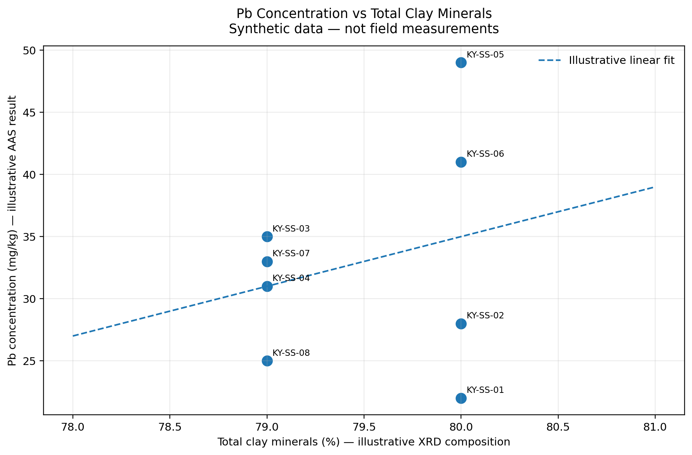
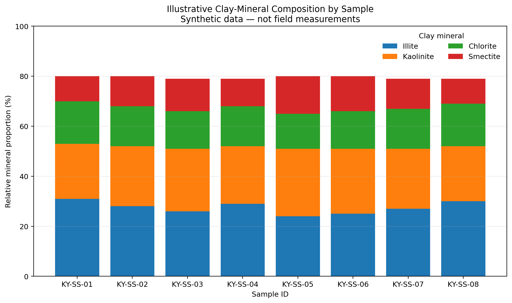

Project objective
This example demonstrates how data from two analytical approaches can be visualized together: X-ray diffraction (XRD) to characterize mineral composition and atomic absorption spectroscopy (AAS) to quantify lead (Pb). A real interpretation requires paired XRD and AAS results from the same samples, suitable quality control, and consistent units.
Figure 1. Pb concentration versus total clay minerals

How to read it: Each point represents one illustrative sample. In a real study, the horizontal axis could represent a verified clay-mineral measure and the vertical axis a Pb concentration measured from the corresponding sample. A trend should only be interpreted after checking analytical uncertainty, sample pairing, and possible confounding factors.
Figure 2. Illustrative clay-mineral composition by sample

How to read it: A comparable plot based on measured XRD results could help describe mineralogical differences between sampling locations. Mineral proportions should be calculated using an appropriate and documented method.
Methods and reproducibility
The input table is supplied in CSV and Excel formats. The Python script reads the CSV with pandas, uses matplotlib to generate plots, and saves the figures as PNG files. To reproduce locally, install pandas, numpy, and matplotlib, then run the script from the project root.
Reference and further reading
GitHub Docs. (n.d.). Creating a GitHub Pages site. https://docs.github.com/en/pages/getting-started-with-github-pages/creating-a-github-pages-site
This page is a student-created coding demonstration, not a publication reporting new geochemical measurements.